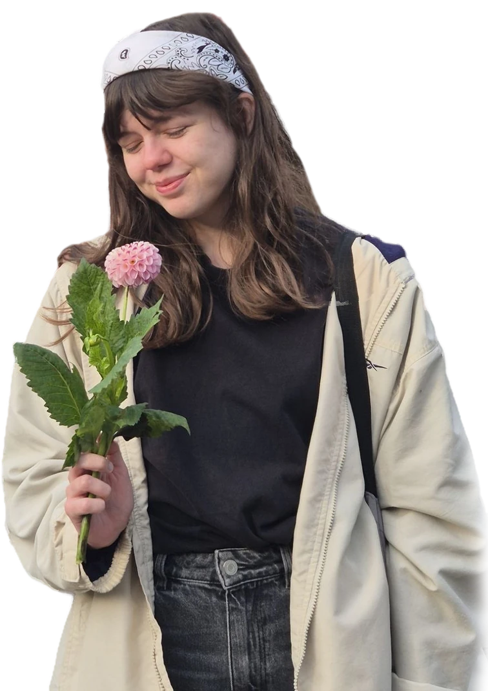
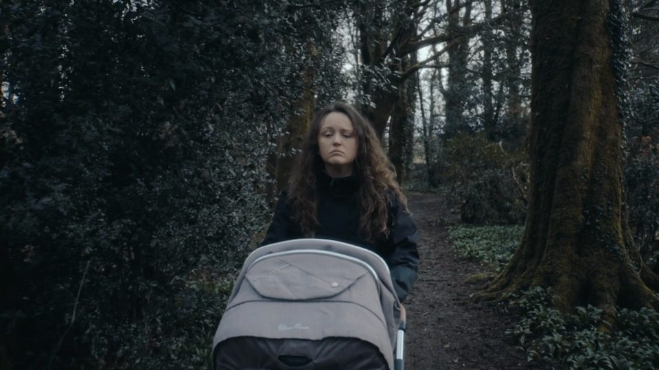
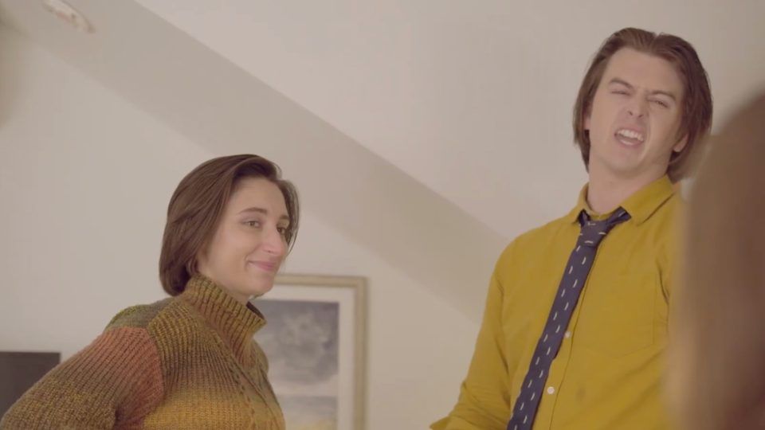
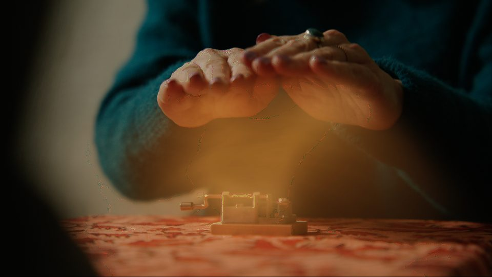
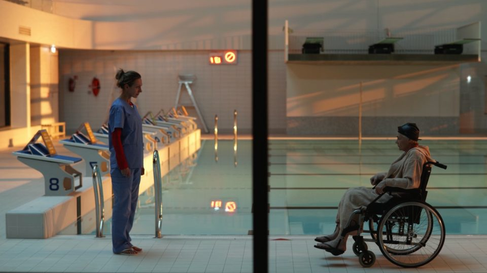

Nadinka
composer & songwriter
Lithuania-based freelance composer and songwriter.
Film Soundtracks

“You Just Tired”
Hannah Saks · 15 min · 2025
psychological, horror

“Wild Animals”
Marty Theobald · 9 min · 2025
sci-fi, romance

“Memory Sculptor”
Hantje Pearl · 3 min · 2025
fairy tale, music box

“Procedūra”
Jokūbas Virbickas · 6 min · 2026
psychological, horror
Songwriting & Music Production
Godo Yorke – “<3 Neparodai”
ESC 2025 Lithuania, National Selection
co-producing with Goda Sasnauskaitė, Pedro Joaquim Borges, Paulius Večeris
BAIOL – “jeszcze”
instrumental arrangement & piano by Nadiia Sazonova
Earlier collaborations as a pianist
Emanuele Congeddu vs First Sight & Nadia Sazonova – “Black Orchid”
Blue Soho Recordings, 2015
Syntouch & Aylin with Nadia Sazonova – “Behind These Walls”
Abora Ascend, 2016
For commissions, collaborations or questions: